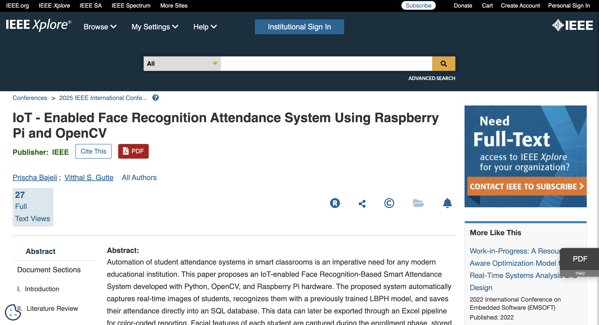

04 / Research
Publications
Two peer-reviewed papers across IEEE and Springer venues. Click through to read the full work.
IEEE

2025
IoT-Enabled Face Recognition Attendance System
IEEE ETCOM 2025
An LBPH face recognition system deployed on a Raspberry Pi 4 to automate attendance for 50+ students at 95%+ accuracy, eliminating manual entry entirely.
Springer

2025
Multivariate Time-Series Energy Consumption Prediction
Springer LNNS · ICTCS 2025, Jaipur, India
An RFE-LSTM forecasting pipeline over 35K hourly samples, with an ablation study identifying lag features as key signals — reducing MAE/RMSE by up to 7%.